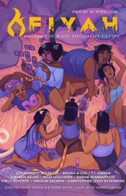

T.T. Gibran (they/them) is a Black (Soulaan) and first-generation Palestinian speculative fiction writer. They attended the Clarion West, Tin House, and Juniper workshops. Their short story “Minority Museum” appeared in FIYAH and was recommended in Locus.
They've earned degrees in Physics and Data Science, a fellowship from DeepMind, a grant from the National Science Foundation, and published in the Journal of Applied Physics.
Gibran's stories draw heavily on their ancestry, from the swamps of South Carolina through the shores of Haifa, to blend African and Arab mythologies with alternate histories and dystopian futures. They believe that all anti-colonial struggles are connected and that storytelling is an act of resistance, an expression of identity. Free Congo. Free Palestine.
When they aren't writing, they spend their time re-reading Octavia Butler, making afrofuturist music, and searching for a good vegan baklava. They currently live in Los Angeles with their partner and two dogs.

Recommended Story, Locus
“There’s a heartbreaking and transcendent quality to this story as Gibran presents each new painful iteration of Ahmad’s fate.”
Semi-Finalist, James M. Kirkwood Literary Prize
UCLA Extension Writer's Program
Clarion West Six-Week Summer Workshop
Tin House Autumn Workshop
Juniper Summer Writing Institute
Master of Science, Data Science
New York University
Fellow
Google DeepMind
Master of Engineering, Technology Management
University of California, Santa Barbara
XSEDE Grant
National Science Foundation
Bachelor of Science, Physics
University of California, Santa Barbara